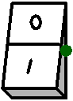

| Library: | Input/Output |
| Introduced: | 2.7.1.1 (Fork) |
| Appearance: |  |
The Switch component works as the controlled buffer but there isn't the enable pin because are you that enable/disable it by clicking on it with the poke tool
There are just two pins, a 1-bit output and a 1-bit input
When the component is selected or being added,
the arrow keys alter its Facing
attribute.
For each mouse click on the component, you close / open the switch
Allows the label associated with the component to be edited.